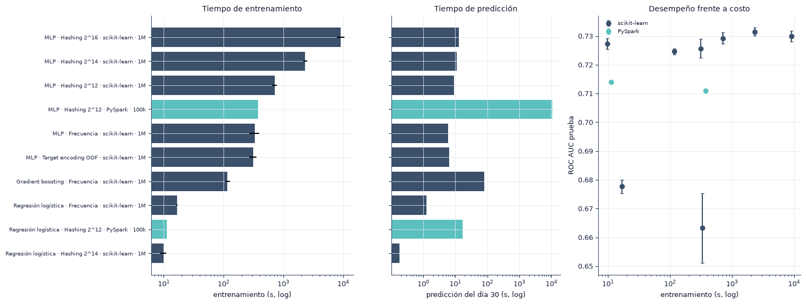
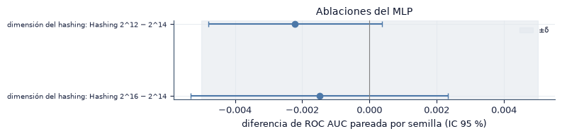

9. Comparación de resultados#
En este capítulo reunimos en una sola tabla el desempeño y el costo de todas las configuraciones (entorno, modelo y codificación), comparamos tiempos y memoria, y presentamos las ablaciones: dimensión del hashing, cruces de variables, profundidad del MLP y ponderación de clases.
import sys
from pathlib import Path
ROOT = next(p for p in [Path.cwd(), *Path.cwd().parents] if (p / "src" / "config.py").exists())
if str(ROOT) not in sys.path:
sys.path.insert(0, str(ROOT))
import numpy as np
import pandas as pd
import matplotlib.pyplot as plt
from IPython.display import Markdown, display
from src import config as C
from src import plots as P
from src import report as R
from src.persist import load_json
P.setup()
C.ensure_dirs()
pd.set_option("display.precision", 4)
pd.set_option("display.max_colwidth", 90)
print("Resultados:", C.RESULTS.relative_to(C.ROOT), "| prueba de humo:", C.SMOKE)
from src.metrics import paired_t
enc = R.runs("scikit-learn", "encoding")
best_enc = enc.groupby("encoding")["val.roc_auc"].mean().idxmax()
todo = pd.concat([enc, R.runs("scikit-learn", "baselines"), R.runs("PySpark", "main")], ignore_index=True)
todo["configuración"] = todo.apply(R.label, axis=1)
print(f"{len(todo)} corridas | mejor codificación del MLP en validación: {C.ENCODING_LABELS[best_enc]}")
Resultados: results | prueba de humo: False
42 corridas | mejor codificación del MLP en validación: Hashing 2^14
9.1 Tabla comparativa#
Cada celda muestra media ± desviación estándar entre semillas y el intervalo de confianza del 95 % (\(t\)). Los tiempos y la memoria son medias entre semillas.
mets = ["test.roc_auc", "test.pr_auc", "test.log_loss", "test.ece"]
s = R.summarize(todo, ["env", "size", "configuración"], mets + ["bench.fit_s", "bench.predict_s", "bench.fit_peak_mb"])
t = R.pretty(s, ["env", "size", "configuración"], mets)
t["entrenamiento (s)"] = s["bench.fit_s|media"].round(1).values
t["predicción (s)"] = s["bench.predict_s|media"].round(1).values
t["memoria pico (MB)"] = s["bench.fit_peak_mb|media"].round(0).values
t = t.sort_values(["env", "size", "ROC AUC"], ascending=[False, True, False])
display(t.rename(columns={"env": "entorno", "size": "muestra"}).set_index(["entorno", "muestra", "configuración"]))
s.to_csv(C.SUMMARY / "tabla_9_1.csv", index=False)
| semillas | ROC AUC | PR AUC | Log loss | ECE | entrenamiento (s) | predicción (s) | memoria pico (MB) | |||
|---|---|---|---|---|---|---|---|---|---|---|
| entorno | muestra | configuración | ||||||||
| scikit-learn | 1M | MLP · Hashing 2^14 | 5 | 0.7315 ± 0.0014 [0.7297, 0.7333] | 0.3606 ± 0.0013 [0.3589, 0.3622] | 0.4055 ± 0.0005 [0.4048, 0.4062] | 0.0117 ± 0.0024 [0.0087, 0.0147] | 2320.4 | 11.2 | 6903.0 |
| MLP · Hashing 2^16 | 5 | 0.7300 ± 0.0019 [0.7277, 0.7323] | 0.3590 ± 0.0030 [0.3552, 0.3628] | 0.4070 ± 0.0020 [0.4046, 0.4094] | 0.0182 ± 0.0107 [0.0050, 0.0314] | 9072.1 | 12.8 | 7043.0 | ||
| MLP · Hashing 2^12 | 5 | 0.7293 ± 0.0020 [0.7268, 0.7317] | 0.3580 ± 0.0024 [0.3550, 0.3611] | 0.4060 ± 0.0007 [0.4051, 0.4069] | 0.0097 ± 0.0054 [0.0030, 0.0164] | 714.8 | 8.9 | 5711.0 | ||
| Regresión logística · Hashing 2^14 | 5 | 0.7273 ± 0.0019 [0.7250, 0.7296] | 0.3518 ± 0.0017 [0.3496, 0.3539] | 0.4084 ± 0.0019 [0.4060, 0.4107] | 0.0175 ± 0.0109 [0.0040, 0.0311] | 9.8 | 0.2 | 7358.0 | ||
| MLP · Target encoding OOF | 5 | 0.7256 ± 0.0033 [0.7216, 0.7297] | 0.3541 ± 0.0031 [0.3503, 0.3580] | 0.4084 ± 0.0016 [0.4064, 0.4104] | 0.0136 ± 0.0047 [0.0078, 0.0195] | 310.3 | 6.4 | 10807.0 | ||
| Gradient boosting · Frecuencia | 5 | 0.7246 ± 0.0011 [0.7232, 0.7260] | 0.3500 ± 0.0011 [0.3487, 0.3513] | 0.4085 ± 0.0005 [0.4079, 0.4091] | 0.0131 ± 0.0012 [0.0115, 0.0146] | 116.3 | 78.9 | 13874.0 | ||
| Regresión logística · Frecuencia | 5 | 0.6777 ± 0.0024 [0.6747, 0.6807] | 0.2976 ± 0.0012 [0.2961, 0.2991] | 0.4285 ± 0.0013 [0.4269, 0.4301] | 0.0231 ± 0.0043 [0.0178, 0.0284] | 16.9 | 1.3 | 9768.0 | ||
| MLP · Frecuencia | 5 | 0.6632 ± 0.0121 [0.6482, 0.6783] | 0.3036 ± 0.0115 [0.2893, 0.3179] | 0.4320 ± 0.0042 [0.4268, 0.4373] | 0.0286 ± 0.0100 [0.0162, 0.0411] | 333.0 | 5.9 | 10750.0 | ||
| PySpark | 100k | Regresión logística · Hashing 2^12 | 1 | 0.7140 ± 0.0000 | 0.3276 ± 0.0000 | 0.4175 ± 0.0000 | 0.0277 ± 0.0000 | 11.2 | 17.1 | 11803.0 |
| MLP · Hashing 2^12 | 1 | 0.7109 ± 0.0000 | 0.3275 ± 0.0000 | 0.4155 ± 0.0000 | 0.0128 ± 0.0000 | 373.9 | 10804.7 | 17269.0 |
9.2 Tiempo, memoria y desempeño#
s["etiqueta"] = s["configuración"] + " · " + s["env"] + " · " + s["size"].astype(str)
ss = s.sort_values("bench.fit_s|media")
fig, axes = plt.subplots(1, 3, figsize=(15, 0.42 * len(ss) + 1.5), gridspec_kw={"width_ratios": [1.2, 1, 1.2]})
colr = [C.ENV_COLORS[e] for e in ss["env"]]
axes[0].barh(ss["etiqueta"], ss["bench.fit_s|media"], xerr=ss["bench.fit_s|de"], color=colr); axes[0].set_xscale("log")
axes[0].set_xlabel("entrenamiento (s, log)"); axes[0].set_title("Tiempo de entrenamiento"); axes[0].tick_params(axis="y", labelsize=7)
axes[1].barh(ss["etiqueta"], ss["bench.predict_s|media"], color=colr); axes[1].set_xscale("log"); axes[1].set_yticklabels([])
axes[1].set_xlabel("predicción del día 30 (s, log)"); axes[1].set_title("Tiempo de predicción")
for e in C.ENV_COLORS:
g = s[s["env"] == e]
axes[2].errorbar(g["bench.fit_s|media"], g["test.roc_auc|media"], yerr=g["test.roc_auc|de"], fmt="o", color=C.ENV_COLORS[e], label=e, capsize=2)
axes[2].set_xscale("log"); axes[2].set_xlabel("entrenamiento (s, log)"); axes[2].set_ylabel("ROC AUC prueba"); axes[2].set_title("Desempeño frente a costo"); axes[2].legend(fontsize=7)
fig.tight_layout(); P.save(fig, "9_2_tiempos_auc"); plt.show()

top = s.sort_values("test.roc_auc|media", ascending=False).iloc[0]
rap = s.sort_values("bench.fit_s|media").iloc[0]
cal = s.sort_values("test.ece|media").iloc[0]
R.findings(
f"La configuración con mayor ROC AUC es {top['etiqueta']} ({top['test.roc_auc|media']:.4f}), con {R.secs(top['bench.fit_s|media'])} de entrenamiento. "
f"La más rápida es {rap['etiqueta']} ({R.secs(rap['bench.fit_s|media'])}, AUC {rap['test.roc_auc|media']:.4f}) y la mejor calibrada "
f"{cal['etiqueta']} (ECE {cal['test.ece|media']:.4f}).",
{"Desempeño": f"las tres mejores configuraciones están dentro de {s['test.roc_auc|media'].nlargest(3).max() - s['test.roc_auc|media'].nlargest(3).min():.4f} de AUC; las pruebas del capítulo 6 indican qué diferencias son relevantes.",
"Costo": "el tiempo de entrenamiento varía en varios órdenes de magnitud entre configuraciones, mucho más que el AUC.",
"Riesgos": f"las configuraciones de Spark con {R.num(C.SIZES[C.SPARK_MLP_SIZE])} filas no son comparables en AUC con las de scikit-learn con {R.num(C.SIZES[C.MAIN_SIZE])}: el tamaño de la muestra también cambia."})
Hallazgos y decisiones
La configuración con mayor ROC AUC es MLP · Hashing 2^14 · scikit-learn · 1M (0.7315), con 38.7 min de entrenamiento. La más rápida es Regresión logística · Hashing 2^14 · scikit-learn · 1M (9.8 s, AUC 0.7273) y la mejor calibrada MLP · Hashing 2^12 · scikit-learn · 1M (ECE 0.0097).
Desempeño: las tres mejores configuraciones están dentro de 0.0022 de AUC; las pruebas del capítulo 6 indican qué diferencias son relevantes.
Costo: el tiempo de entrenamiento varía en varios órdenes de magnitud entre configuraciones, mucho más que el AUC.
Riesgos: las configuraciones de Spark con 100 000 filas no son comparables en AUC con las de scikit-learn con 1 000 000: el tamaño de la muestra también cambia.
9.3 Ablaciones#
Cada ablación cambia un solo factor del MLP de referencia (codificación elegida en validación, hiperparámetros de Optuna, sin pesos y sin cruces) y mantiene las semillas. Reportamos la diferencia de ROC AUC pareada por semilla con su intervalo del 95 %.
Ablación |
Variante |
Referencia |
|---|---|---|
Dimensión del hashing |
\(2^{12}\) y \(2^{16}\) |
\(2^{14}\) |
Cruces de variables |
Con |
Sin cruces, misma codificación |
Profundidad del MLP |
(100), (100, 50), (256, 128), (256, 128, 64) |
Arquitectura de Optuna |
Ponderación de clases |
Pesos \(N / (2 N_k)\) |
Sin pesos |
ref = enc[enc["encoding"] == best_enc].set_index("seed")
filas = []
def comparar(nombre, variante, df, base):
a = df.set_index("seed")["test.roc_auc"]; b = base["test.roc_auc"]
seeds = sorted(set(a.index) & set(b.index))
if len(seeds) < 2:
return
t = paired_t(a.loc[seeds].values, b.loc[seeds].values)
filas.append({"ablación": nombre, "variante": variante, "ΔAUC": t["diff"], "IC inf": t.get("lo"), "IC sup": t.get("hi"), "p": t["p"], "semillas": len(seeds)})
h14 = enc[enc["encoding"] == "hash_14"].set_index("seed")
for e in ["hash_12", "hash_16"]:
comparar("dimensión del hashing", C.ENCODING_LABELS[e] + " − 2^14", enc[enc["encoding"] == e], h14)
cr = R.runs("scikit-learn", "ablation_cross")
if len(cr):
e_cr = cr["encoding"].iat[0]
comparar("cruces de variables", f"con cruces − sin cruces ({C.ENCODING_LABELS[e_cr]})", cr, enc[enc["encoding"] == e_cr].set_index("seed"))
dp = R.runs("scikit-learn", "ablation_depth")
opt_hl = load_json(C.COMMON / f"optuna_mlp_{C.MLP_TUNE_ENCODING}.json")["best_params"]["hidden_layer_sizes"]
for hl, g in dp.groupby(dp["params.hidden_layer_sizes"]):
comparar("profundidad", f"({hl.replace('-', ', ')}) − ({opt_hl.replace('-', ', ')})", g, ref)
comparar("ponderación de clases", "con pesos − sin pesos", R.runs("scikit-learn", "ablation_weight"), ref)
abl = pd.DataFrame(filas)
abl["relevante (|Δ| ≥ δ y p < 0.05)"] = (abl["ΔAUC"].abs() >= C.DELTA_AUC) & (abl["p"] < C.ALPHA)
R.tabla(abl, ["ablación", "variante"], 4)
fig, ax = plt.subplots(figsize=(8, 0.4 * len(abl) + 1.2))
yy = np.arange(len(abl))[::-1]
ax.errorbar(abl["ΔAUC"], yy, xerr=[abl["ΔAUC"] - abl["IC inf"], abl["IC sup"] - abl["ΔAUC"]], fmt="o", color=C.BAR, capsize=3)
ax.axvline(0, c="gray", lw=0.8); ax.axvspan(-C.DELTA_AUC, C.DELTA_AUC, color="#E3E8EE", alpha=0.6, label="±δ")
ax.set_yticks(yy, abl["ablación"] + ": " + abl["variante"], fontsize=7)
ax.set_xlabel("diferencia de ROC AUC pareada por semilla (IC 95 %)"); ax.set_title("Ablaciones del MLP"); ax.legend(fontsize=7)
fig.tight_layout(); P.save(fig, "9_3_ablaciones"); plt.show()
| ΔAUC | IC inf | IC sup | p | semillas | relevante (|Δ| ≥ δ y p < 0.05) | ||
|---|---|---|---|---|---|---|---|
| ablación | variante | ||||||
| dimensión del hashing | Hashing 2^12 − 2^14 | -0.0022 | -0.0048 | 0.0004 | 0.0760 | 5 | False |
| Hashing 2^16 − 2^14 | -0.0015 | -0.0053 | 0.0023 | 0.3411 | 5 | False |

rel = abl[abl["relevante (|Δ| ≥ δ y p < 0.05)"]]
R.findings(
("Ninguna ablación produce un cambio de ROC AUC significativo y mayor que δ. " if rel.empty else
"Producen un cambio significativo y mayor que δ: " + "; ".join(f"{r['ablación']} ({r['variante']}: {r['ΔAUC']:+.4f})" for _, r in rel.iterrows()) + ". ")
+ f"La mayor diferencia en valor absoluto es la de {abl.loc[abl['ΔAUC'].abs().idxmax(), 'ablación']} "
f"({abl.loc[abl['ΔAUC'].abs().idxmax(), 'variante']}: {abl.loc[abl['ΔAUC'].abs().idxmax(), 'ΔAUC']:+.4f}).",
{"Dimensión del hashing": "más columnas reducen las colisiones pero multiplican los pesos de la primera capa; el efecto neto sobre el AUC se lee en la tabla.",
"Cruces y profundidad": "si los cruces no mejoran al MLP, la red ya representa esas interacciones en su capa oculta; una red más profunda solo ayuda si hay interacciones de orden mayor que la muestra permita estimar.",
"Riesgos": "con cinco semillas, los intervalos son anchos; una ablación sin diferencia significativa no demuestra que el factor sea irrelevante."})
Hallazgos y decisiones
Ninguna ablación produce un cambio de ROC AUC significativo y mayor que δ. La mayor diferencia en valor absoluto es la de dimensión del hashing (Hashing 2^12 − 2^14: -0.0022).
Dimensión del hashing: más columnas reducen las colisiones pero multiplican los pesos de la primera capa; el efecto neto sobre el AUC se lee en la tabla.
Cruces y profundidad: si los cruces no mejoran al MLP, la red ya representa esas interacciones en su capa oculta; una red más profunda solo ayuda si hay interacciones de orden mayor que la muestra permita estimar.
Riesgos: con cinco semillas, los intervalos son anchos; una ablación sin diferencia significativa no demuestra que el factor sea irrelevante.